21
open questions,
every one with a name against it
every one with a name against it
Architecture decisions, process docs, system diagrams and an application inventory — as plain text in one Git repo, validated by CI, published automatically.
Any process that eventually asks an expert to write something stalls at exactly the moment it becomes useful.
| Text as source | Every artifact is a human-readable file. Diffable, reviewable, versioned — and readable by a model. |
| Data to docs | Structured data is transformed into views. Nothing derived is maintained by hand, so nothing derived can drift. |
| Automation over policy | A record with a bad value doesn't get a stern comment in review. It fails the build. |
The published site is a projection of the repository — not a second thing to maintain.
| context/ | What world are we operating in? |
| decisions/ | Why is it like this? |
| processes/ | How is change supposed to work? |
| diagrams/ | How do systems actually connect? |
| evidence/ | Show me what actually happened. |
| inventory/ | What exists, who owns it, how does it connect? |
| standards/ | What rules must every change follow? |
| templates/ | How do I start? |
| automation/ | What renders and validates all this? |
| meta/ | How does this repo work — for humans and AI? |
all-applications · by-vendor · by-owner · by-team · capability-map · integration-matrix · dr-posture
# inventory/apps/data/meridian-erp.yaml it_sme: Infrastructure ← fails the build it_sme: Priya Raman ← passes
Every controlled value lives in schema.yaml. Adding a
vendor, a person or a team means editing the schema in the same pull request.
| Workflow | Trigger | What it does |
|---|---|---|
validate.yml | pull request | Validates every record, parses every diagram. Writes nothing. A bad value fails here, before merge. |
render.yml | push to main | Renders views, generates the landscape diagram, renders D2 → SVG, verifies, commits back, publishes. |
DEC-008 stays in the decision
log, unedited, marked superseded.
| The question you ask each round | Where the answer lives |
|---|---|
| Who do we talk to next, and what do we ask them? | Register queue, sorted by what each conversation unblocks — not by row count |
| What's actually stuck, and stuck on what kind of thing? | A name, a calendar, or a decision. Three different problems. |
| Is the loop still turning? | Rows arriving vs rows leaving. A register that only grows means conversations aren't happening. |
.vtt goes in. This falls out.Records, decisions, a summary, an updated register, refreshed briefs — and the part nobody asked for:
| One person is sole SME, technical owner and recovery owner for both integration paths | every inbound commercial flow |
| A Tier 2 system sits synchronously inside a Tier 1 transaction | tiers were assigned per application; nobody tiered the path |
| A retiring system — no owner, no date — still writing into the core | blocked on pricing terms held inside the system being retired |
| An app three business functions use that nobody in IT can answer a question about | bought on a departmental card |
Because it's generated from records, reviewed by a human and validated by a build — not because someone promised to keep it current.
The limit on enterprise AI isn't model capability. It's that the model has no idea what your systems are, who owns them, or why they're like that.
“Here are general DR best practices for ERP-centric estates…”
Plausible. Generic. Unusable.
“The EDI path can't be stopped — partners don't retry, and 40% of order lines arrive that way.”
Specific. Checkable. Sourced to the conversation where somebody said so.
better context → sharper drafting → better questions
→ richer records → better context
A few hundred applications and their integrations — out of people's heads and into validated YAML.
Not an EA tool. Not a CMDB. Not a replacement for one.
If you need lifecycle workflows, cost modelling and a hundred stakeholders in a UI — buy something.
This is for the case where you have none of that, need the answers anyway, and would rather own portable text than a subscription.
One MIT-licensed repository. No secrets, no accounts, no external services — clone it and it runs. Link in the description.